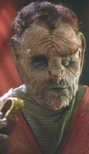

Yridiani |
|
||||||
|  |
In una timeline alternativa l'Enterprise
del capitano Tucker incontra un membro di questa specie, Yedrin Koss.
I Borg (che hanno classificato gli Yridiani come
specie 6291) e la Federazione
ritenevano che questa razza si fosse estinta, ma l'exobiologo Rudy Ransom ha
dimostrato il contrario quando ha stabilito il primo contatto con loro. Questa
scoperta ha fatto sì che Ransom venisse promosso capitano e gli venisse affidato
il comando della Equinox.